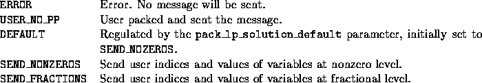

int user_send_lp_solution(void *user, int varnum, var_desc **vars,
double *x, int where)
The user has the option to send the LP solution to either the cut pool or the cut generator in some user-defined form if desired. There are two default options--sending the indices and values for all nonzero variables (SEND_NONZEROS) and sending the indices and values for all fractional variables (SEND_FRACTIONS).


The wrapper automatically packs the level, index, and iteration number corresponding to the current LP solution within the current search tree node, as well as the objective value and upper bound in case the solution is sent to a cut generator. This data will be unpacked by SYMPHONY on the receiving end, the user will have to unpack there exactly what he has packed here.